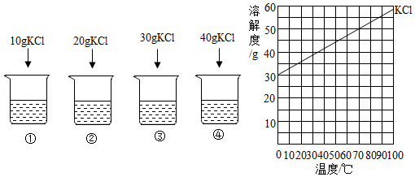

2017年北京市中考化学真题 · 选择题 第11、12、13、14、15题 · 对应解析
11．【分析】土壤显微酸性，即土壤的pH略小于7，因此该地区不适宜种植在碱性土壤中生长的作物；根据作物最适宜的pH范围做出判断。
【解答】解：A、花生最适宜的土壤为微酸性，适宜该地区得种植；故A不正确；
B、苹果最适宜的土壤为酸性，适宜该地区得种植；故B不正确；
C、西瓜最适宜的土壤为微酸性，适宜该地区得种植；故C不正确；
D、沙枣最适宜的土壤为弱碱性，不适宜该地区得种植；故D正确；
故选：D。
【点评】酸碱性与pH关系为：pH大于7为碱性且越大碱性越强，pH小于7为酸性且越小酸性越强，pH等于7为中性。
12．【分析】化学反应的类型有四个：化合反应、分解反应、置换反应和复分解反应。化合反应是有两种或两种以上的物质生成一种物质的化学反应，特征是：多变一。分解反应是由一种物质生成两种或两种以上的物质的反应，特征是：一变多；置换反应是一种单质和一种化合物反应生成另一种单质和另一种化合物的化学反应，2H2+SiCl4Si+4HCl，该反应属于置换反应。复分解反应是两种化合物互相交换成分生成另外两种化合物的反应。
【解答】解：A、化合反应是有两种或两种以上的物质生成一种物质的化学反应，故选项错误；
B、分解反应是由一种物质生成两种或两种以上的物质的反应，故选项错误；
C、置换反应是一种单质和一种化合物反应生成另一种单质和另一种化合物的化学反应，2H2+SiCl4Si+4HCl，该反应属于置换反应，故选项正确；
D、复分解反应是两种化合物互相交换成分生成另外两种化合物的反应，故选项错误；
故选：C。
【点评】本考点考查了基本反应类型的判断，要牢记四个基本反应类型的概念，并会理解应用。本考点基础性比较强，主要出现在选择题和填空题中。
13．【分析】物质的性质决定用途，可以根据物质的性质方面进行分析、判断，从而得出正确的结论．
【解答】解：A、氧气具有助燃性，但本身不可以燃烧，故氧气不可以用做燃料，故描述错误；
B、二氧化碳是植物光合作用的原料，因此可作气体肥料，故描述正确；
C、干冰能升华吸热，可以用于人工降雨，故描述正确；
D、铜丝具有良好的导电性，可用作导线，故描述正确。
故选：A。
【点评】本题难度不大，物质的性质决定物质的用途，掌握常见化学物质的性质和用途是正确解答此类题的关键．
14．【分析】根据化合物中各元素质量比＝各原子的相对原子质量×原子个数之比，进行分析解答。
【解答】解：尿素中C、O、N、H四种元素的质量比＝12：16：（14×2）：4＝3：4：7：1，氮元素的质量分数最大，则表示氮元素质量分数的是①。
故选：A。
【点评】本题难度不大，考查同学们结合新信息、灵活运用化学式的有关计算进行分析问题、解决问题的能力。
15．【分析】根据一氧化碳具有还原性，能与氧化铁反应生成铁和二氧化碳，结合一氧化碳具有可燃性、实验的现象、注意事项，进行分析解答。
【解答】解：A、一氧化碳具有还原性，能与氧化铁反应生成铁和二氧化碳，a处红棕色粉末变为黑色，故选项说法正确。
B、该化学方程式没有注明反应条件高温，且配平错误，正确的化学方程式为3CO+Fe2O32Fe+3CO2，故选项说法错误。
C、二氧化碳能使澄清的石灰水变浑浊，b处澄清石灰水变浑浊，证明有CO2生成，故选项说法正确。
D、根据一氧化碳具有可燃性，为防止污染空气，可利用点燃的方法进行尾气处理，故选项说法正确。
故选：B。
【点评】本题难度不大，掌握一氧化碳还原氧化铁的反应原理、实验现象等是正确解答本题的关键。
依据实验和溶解度曲线回答16～19题．

25℃时，向下列4只盛有100g水的烧杯中，分别加入不同质量的KCl固体，充分溶解．